Summary
I am a senior computer science student studying at Washington University in St. Louis, with minors in mechanical engineering and materials science. I am seeking post-graduation employment as a software engineer.
Education
Washington University in St. Louis, McKelvey School of Engineering
Show Classes
B.S. in Computer Science
GPA: 3.61/4.00
Minors: Mechanical Engineering, Materials Science
Expected May 2020
Show Classes
Computer Science Major:
- Intro to Computer Science
- Intro to Computer Engineering
- Intro to Parallel and Concurrent Programming
- Logic and Discrete Mathematics
- Data Structures and Algorithms
- Web Development
- Rapid Prototype Development and Creative Programming
- Object-Oriented Development Laboratory
- Intro to Machine Learning
- Analysis of Algorithms
- Intro to Computer Security
- Mobile App Development
- Technical Writing
Mechanical Engineering Minor:
- Computer-Aided Design
- Intro to Electrical Circuits
- Engineering Mechanics I: Statics
- Engineering Mechanics II: Dynamics
- Engineering Mechanics III: Deformable Mechanics
- Thermodynamics
- Fluid Mechanics
Materials Science Minor:
- General Chemistry I
- Materials Science
- Mechanics and Materials Science Laboratory
- Intro to Quantum Physics
- Mechanical Behavior of Composites
Skills
Proficient
Familiar
Experience
Washington University Formula SAE Team
Sept. 2016 to Present
Chassis and Ergonomics Lead (2017), Suspension Team Member (2016)
Leadership Achievements:
- Managed the timelines and technical aspects of our vehicle’s virtual and physical builds, including coordinating the work of eight system leads and over 30 other team members
- Led a recruitment program consisting of increased advertising across campus, attendance at WashU’s activity fairs, and a team-led workshop to aid in new member placement, significantly increasing member turnout and retention
- Streamlined our documentation processes to increase the quality of work shown to judges at the competition design event, resulting in the team’s highest-ever design score (up 29 places over the previous year – a 25% improvement)
Technical Achievements:
- Developed the WashU Racing website at sae.wustl.edu, improving the sponsor outreach capabilities of the team
- Assisted the transition to 10” wheels, carbon-fiber suspension linkages and new data acquisition systems, culminating in a 20% reduction in average lap time at the competition endurance event
- Designed and fabricated fully-adjustable pedals to accommodate a wider range of drivers and reduce driver fatigue
- Designed and fabricated a custom carbon-fiber seat using a 3D driver model for precise contouring, resulting in improved driver comfort and a reduction in weight of over 50% compared to the previous year’s seat
- Designed and installed a hard-line braking system; optimized brake bias using pressure sensors for car stability
- Designed and fabricated the vehicle frame with optimized geometry, improving torsional stiffness by over 58% and allowing for the addition of adjustable anti-roll bars that decreased skidpad lap times by 15%
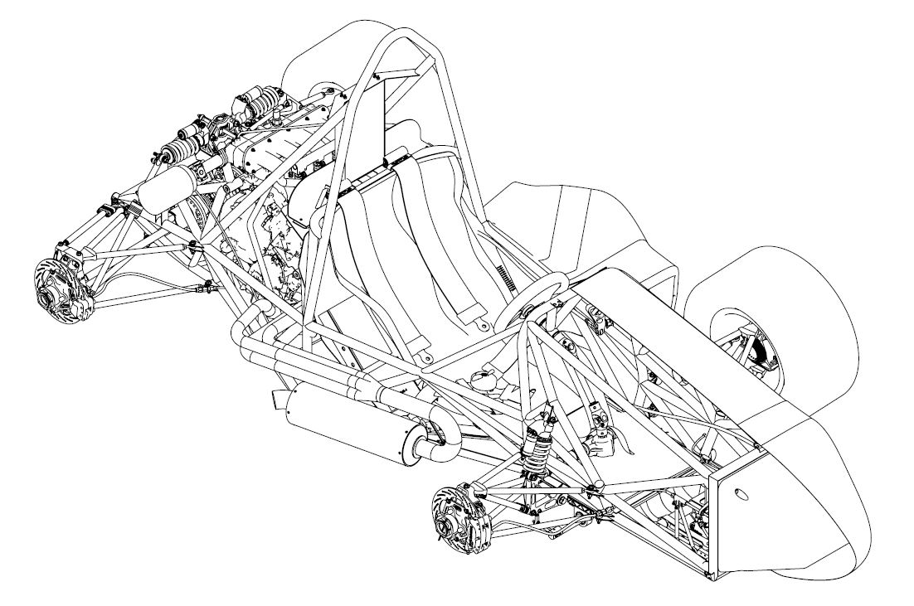
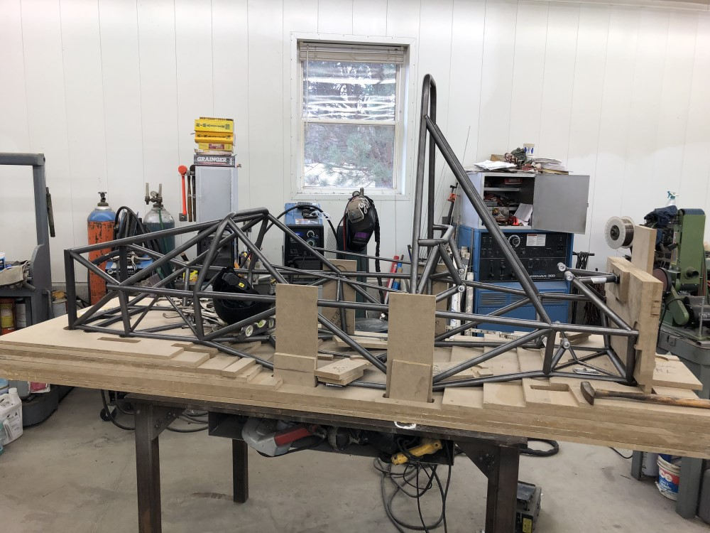
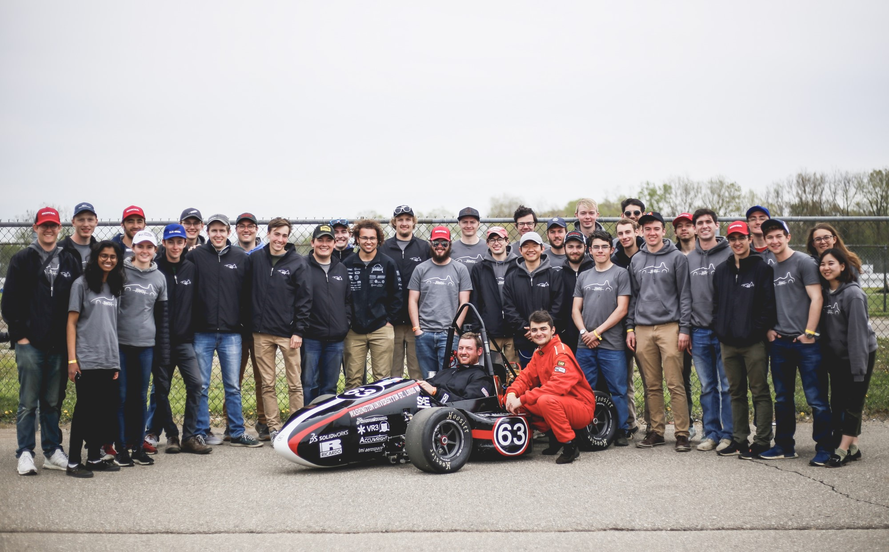
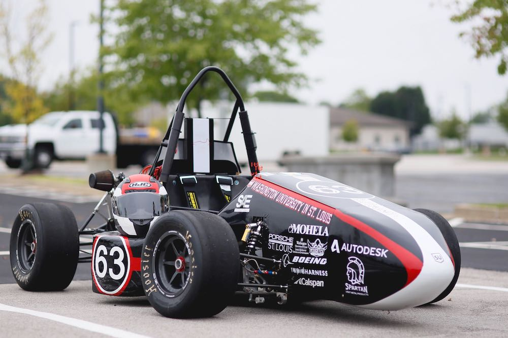
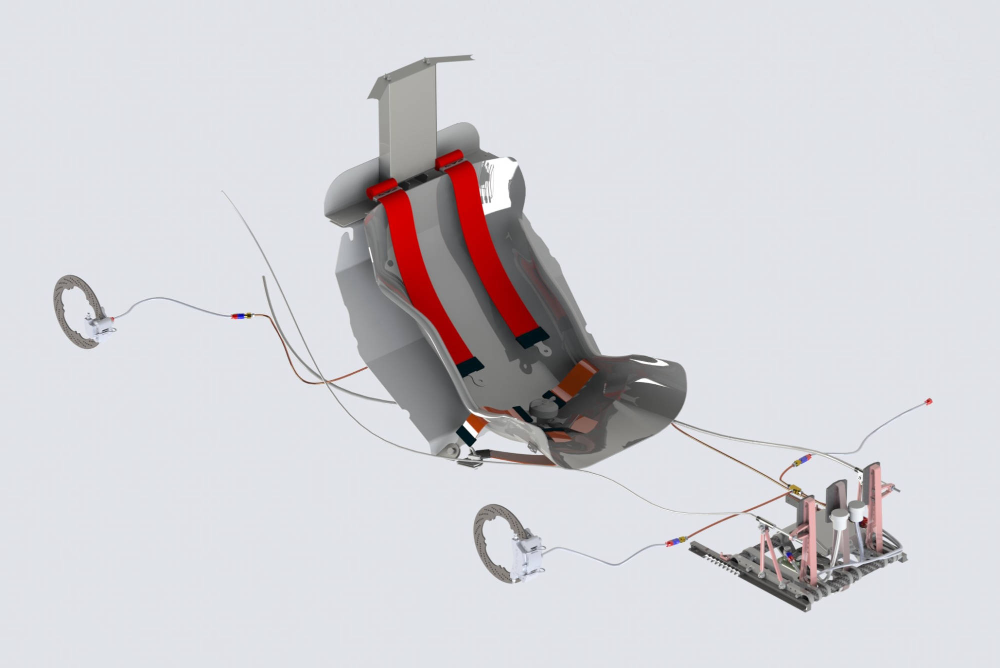
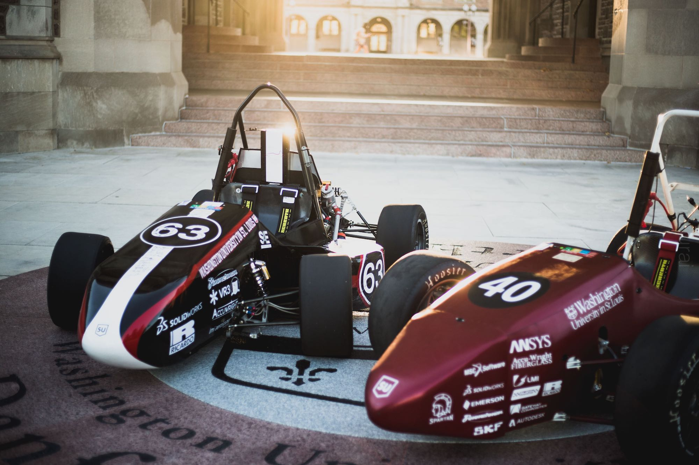
Personal Research Project
Aug. 2018 to Present
- Developed a genetic algorithm to optimize space-frame torsional stiffness using the direct stiffness method
- Improved software efficiency via Python parallelization modules and object-oriented design patterns
- Developed a web GUI for running simulations remotely using Python/Django Channels, vastly improving ease-of-use
- Designed and fabricated a torsional stiffness testing apparatus to validate simulation accuracy at ±5% of actual results
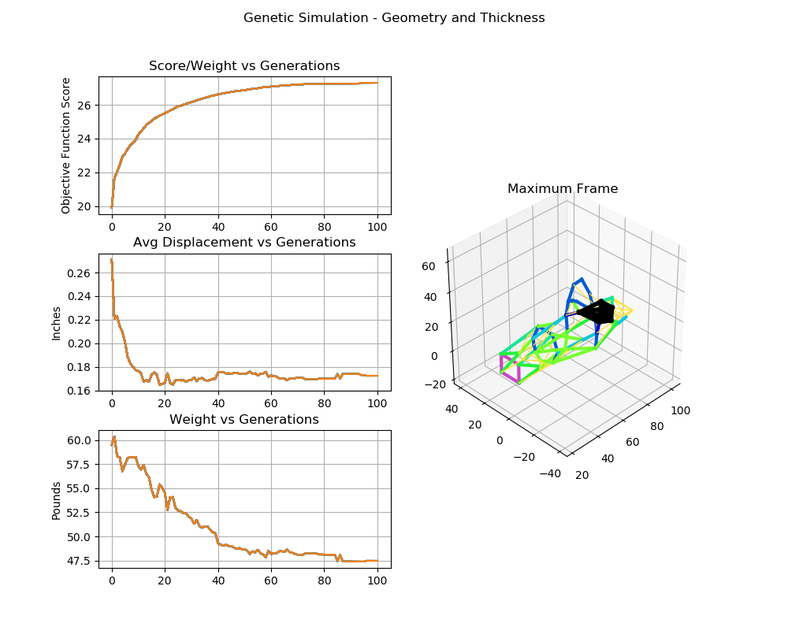
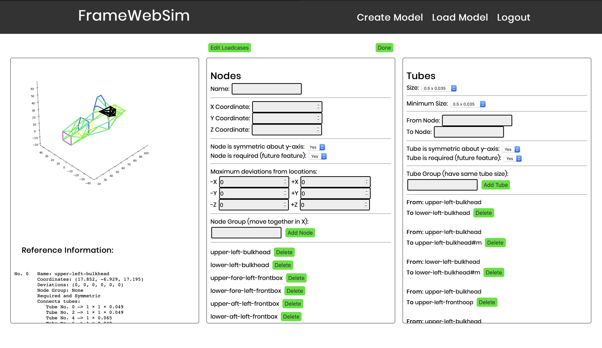
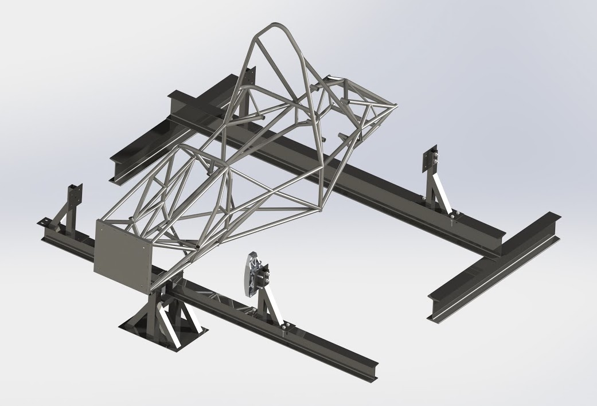
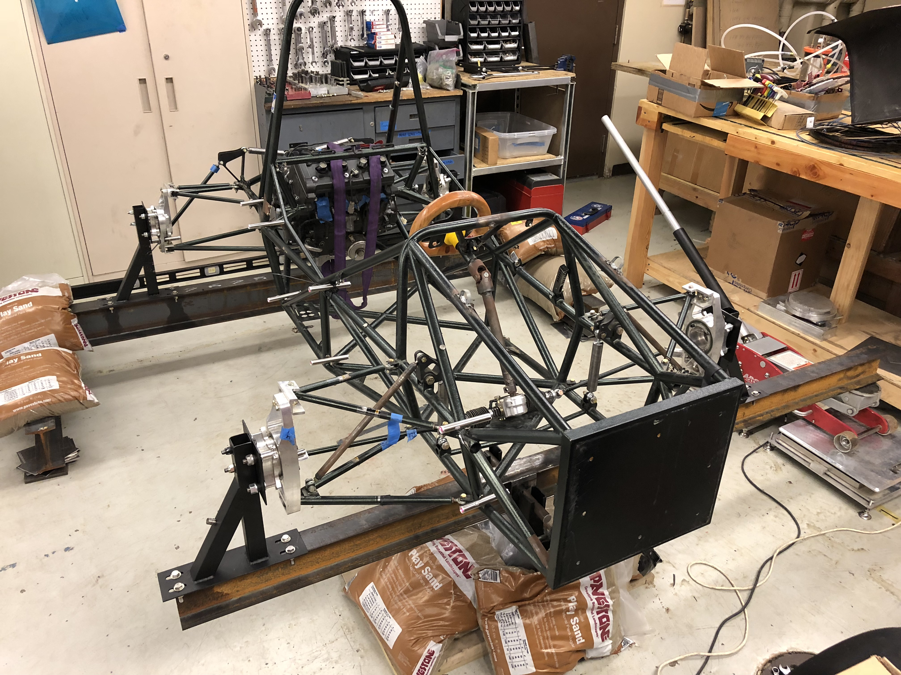
McKelvey School of Engineering
Jan. 2019 to May 2019
- Helped students program Arduinos to interface with components such as 5x7 LED modules and potentiometers
- Helped students develop an understanding of computer architecture, protocol design and data representation
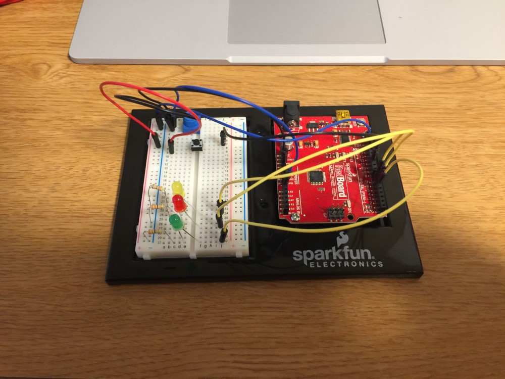
Other Work Experience
Papa John's Pizza
May. 2019 to Present
As a part time job, I deliver pizza to customers and perform various tasks around the store, including cleaning, folding boxes and cutting pizza.
Sherwin-Williams Paint Co.
Jun. 2017 to Feb. 2018
I operated the paint-tinting machine and stocked products in the warehouse. I also made weekly sales phone calls to prospective customers. I received Employee of the Month in December of 2017.
Marco's Pizza
Jun. 2017 to Aug. 2017
I took customers’ orders on the phone, prepared pizzas and sub sandwiches, as well as performing assorted cleaning tasks.
Avista Adventist Hospital
Sept. 2015 to Apr. 2016
While volunteering for 4 hrs/week, I responded to the room calls of post-operative patients, brought them food, helped them walk and answered any questions they had. I also helped facilitate the nurses' work by cleaning medical devices and answering phone
calls.
Alfalfa's Market
Jun. 2014 to Aug. 2016
I managed the cash register and POS system, performed janitorial duties and engaged with customers to deliver professional customer service. Originally employed as a bagger, I was quickly promoted to a cashier position.